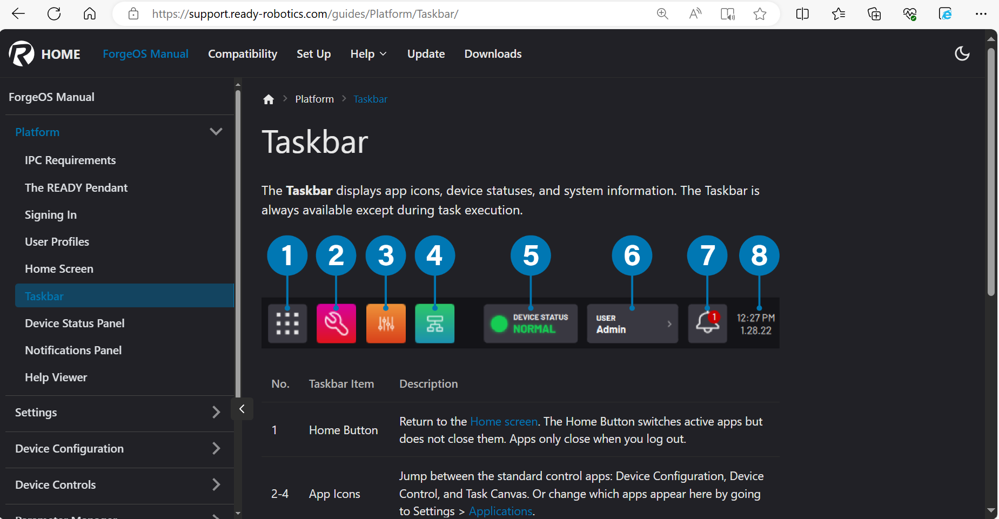
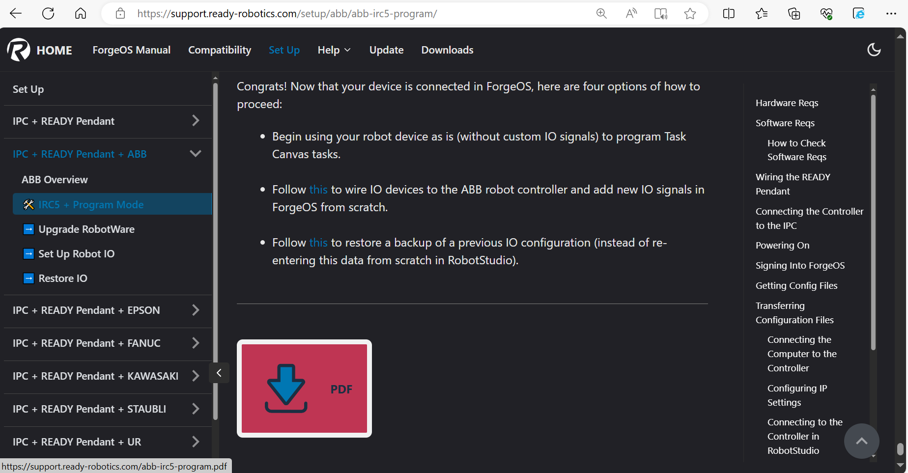
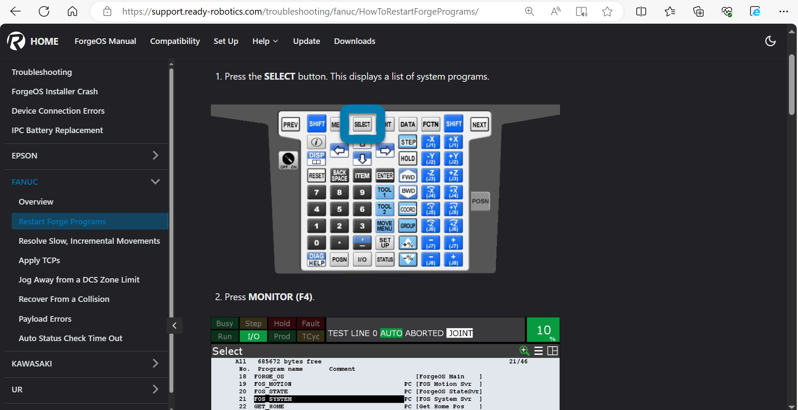
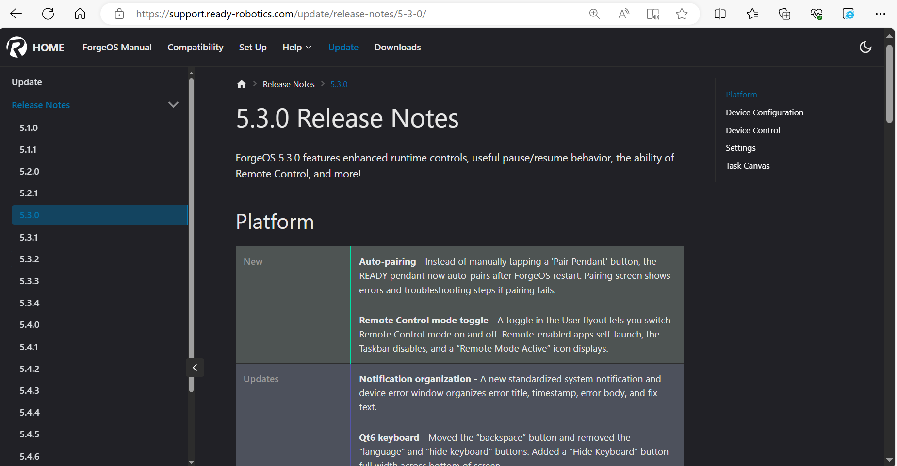

Knowledge Base
Overview
When I first joined READY Robotics in 2020, all customer-facing documentation was published with a DITA-based platform known as easyDITA. In 2021, easyDITA became Heretto. With Heretto’s new enterprise-focused sales plans, it did not make financial sense for a small startup company like READY Robotics to continue to use Heretto’s platform, especially when considering its limitations for READY's purposes.
I researched other CMS platforms (such as Oxygen, ScreenSteps, and HubSpot’s Knowledge Base) and created a Microsoft Excel document to list the pros and cons of each platform. My supervisor and I decided to go with Docusaurus, a free docs-as-code static site generator that gave us the flexibility to revolutionize how we created our customer-facing documentation.
For example, our old strategy of exclusively distributing PDFs caused the following issues:
- PDFs are difficult to navigate. To reference a specific section, you have to flip through a lot of pages.
- Customers using outdated PDFs did not have immediate access to content corrections and clarifications. If they called to ask about “step 3 on page 21,” it was difficult to tell what this matched up to in the latest PDF version.
- If I changed a section that was reused across all setup guides (e.g., “How to Sign into ForgeOS”), then all setup guides had to be republished. It was time-consuming to republish, rename, and review all PDFs.
You can visit the new interactive site at https://support.ready-robotics.com.
My Team's Contributions
I CANNOT take credit for the following:
- Setting up the web hosting/domain
- Designing the icons used on the home page
- Writing certain sections of the original ForgeOS manual and setup guides
My Contributions
Aside from the general migration of all content, areas that I worked on include the following:

ForgeOS Manual
I used Adobe Illustrator to add callouts. In a table, I wrote a description for each called-out feature.

Setup Guides
Using a free Docusaurus plug-in, I wrote a script so that when I typed “npm run generate all” into a terminal, the HTML of all setup guides automatically converted into PDFs, overwriting existing PDFs. Then, with a mere click of a button, I could commit all these new PDFs to GitHub. On the site, at the bottom of each setup guide, the most recently generated PDF could be downloaded from GitHub via a “Download PDF” button.

Troubleshooting Guides
When a customer needed to restart ForgeOS programs but didn’t want to reboot the whole system, I worked with an engineer to test step-by-step instructions, which I then documented.

Release Notes
I organized Release Notes by category and type (new features = green, updates = blue, and fixes = yellow). Whenever someone requested a change in the colors, I only had to change the color key in one file for the change to populate in all Release Notes tables.